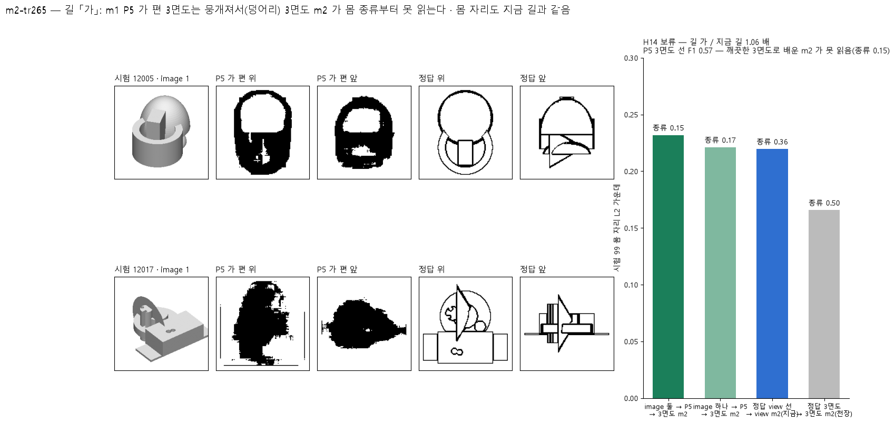

실험 m2_tr0265_h014_펴기
목표 G1.2 view 모음 → 파츠별 CAD code(CadQuery · 그 전 「3 면도 → 파츠별 CAD」 · 지금 M2 는 위 · 앞 · 옆 고정 세 장만 받음 → 아무 각도 N 장으로 바꿀 것 · 11-20) · G1 첫 제품 — 피규어 · 메카 사진 여러 장 + 치수 → 숨은선 3 면도 + 파츠별 CAD · G0 임의의 이미지 → CAD 코드 · 빌린 가정 4: 생성기기하 · 정답3D · 시점앎 · 정사영 · 갚는 계획: 학습 없는 진단 — 길 셋(가 · 나 · 다) 비교의 첫 번째 · 생성기 렌더 · 정답 각도 · 원화CAD짝 시험지는 길을 고른 뒤 · 목표 시험지 값: 안 잼 (!)
길 「가」 — image 를 m1 P5 로 3면도(축에 맞춘 꼴)로 편 뒤 3면도 m2 에 넣으면, 지금 길(view → view m2)보다 몸 자리가 정확한가?
판정 · H14 보류(길 가 / 지금 길 1.06 배) — P5 가 편 3면도는 덩어리(선 F1 0.57)라 3면도 m2 가 종류부터 못 읽음(0.15) · 길 가는 지금 m1 으로는 안 됨 · 살리려면 m1 이 깨끗한 3면도를 내야 함(m1 의 오래된 덩어리 문제) 또는 m2 를 P5 출력으로 배워야 함 · 다음 길 나(기준점)
| 가설 | 주장 | 결과 | 근거 |
|---|---|---|---|
| H14 | m1 이 image 를 3면도로 펴서 3면도 m2 에 넣으면, 지금 길보다 몸 자리가 정확하다 | 보류 | 시험 길 가 0.232 · image 하나 0.221 · 지금 길 0.220 · 정답 3면도 천장 0.166 · 종류 맞음 길 가 0.15 · 하나 0.17 · 지금 길 0.36 · 정답 3면도 0.50 · P5 3면도 선 F1 0.57 · 배운 부품 길 가 0.258(종류 0.19) 대 지금 길 0.186 · 정답 3면도 0.070(0.97) |
분석
한 줄로
물음: m2 가 축에 맞춘 그림에서 몸 자리를 잘 배우니, image 를 먼저 3면도로 펴는 단계를 두면 나아지나?
답: 지금 m1 으로는 안 된다(보류 · 1.06 배). m1 P5 가 편 3면도는 선이 아니라 덩어리라서, 깨끗한 3면도로 배운 m2 가 몸 종류부터 못 읽는다(종류 맞음 0.15). 길 가는 m2 가 아니라 그 앞의 m1 단계에서 막힌다.
왜 이 실험을 했나
m2-tr263 · 264 에서 같은 부품 · 같은 학습이면 축에 맞춘 3면도가 view 보다 몸 자리를 0.41 ~ 0.45 배로 배웠다. 사용자가 m2 입력을 정할 세 길(가 · 나 · 다)을 하나씩 시험하라고 했고, 이것이 첫 번째 「가 = 축에 맞춘 꼴로 펴는 단계」 다.
바꾼 것 하나
m2 앞 단계. 정답 view 선 → view m2(지금 길) 대신, 생성기 렌더 image 둘 → 얼린 m1 P5 → 3면도 보이는 선(둘 합 · 문턱 0.4) → m2-tr263 「3면도 보이는 선만」 m2. P5 의 정답 3면도는 m2 의 3면도 입력과 화소까지 같은 꼴임을 먼저 확인했다(F1 1.000). 학습은 없다.
결과

| 시험 99 | 몸 자리 오차 | 몸 종류 맞음 |
|---|---|---|
| image 둘 → P5 → 3면도 m2(길 가) | 0.232 | 0.15 |
| image 하나 → P5 → 3면도 m2 | 0.221 | 0.17 |
| 정답 view 선 → view m2(지금 길) | 0.220 | 0.36 |
| 정답 3면도 → 3면도 m2(천장) | 0.166 | 0.50 |
H14(길 가 / 지금 길)는 1.06 [0.93, 1.19] 로 판정선(0.8 지지 · 1.0 기각) 사이라 보류다. 지금 길은 정답 view 선을 받아 유리한 비교다.
왜 이렇게 나왔나
확인한 것
- P5 가 편 3면도는 정답과 선 F1 0.57 이고, 그림으로 보면 선이 아니라 칠한 덩어리다(m1 의 덩어리 문제 · m1-tr255).
- 3면도 m2 는 정답 3면도면 배운 부품 종류 0.97 인데 P5 3면도면 0.19 로 무너진다. 입력 꼴이 배운 것과 달라서 읽지 못한다.
짐작 (아직 확인 안 함)
- m1 이 깨끗한 3면도를 내거나, m2 를 P5 출력으로 배우면 길 가가 살아날 수 있다. 다만 m1 의 덩어리는 안 보이는 쪽을 추측해야 하는 데서 오므로(m1-tr256 FP), 사진 한 장으로는 근본적으로 어렵다.
한계
- 생성기 렌더 · 정답 각도 · 시험 99.
- 대조는 정답 view 선을 받았다 — 실제로는 m1 view(짚음 0.85)를 받는다.
배운 것과 다음
길 가는 지금 m1 으로는 안 된다. 막히는 곳은 m2 가 아니라 m1 의 덩어리 3면도다.
- 길 나: m2 가 비스듬한 view 를 그대로 받되 칸마다 3D 기준점을 주고 그 점을 view 에 투영한 자리의 특징을 읽게 한다(회전은 계산).
- 길 다: 숫자는 view 선에 맞춰 재기.
실험 기록
- 카드 · 펴기265.py(흐름 · 예측 · 재기 · 그림) · 잼.json · 흐름.png · 결과.png · 원본 out/설명/캐드부품/모델265(P5_학습 · P5_시험 · G_학습 · G_시험)